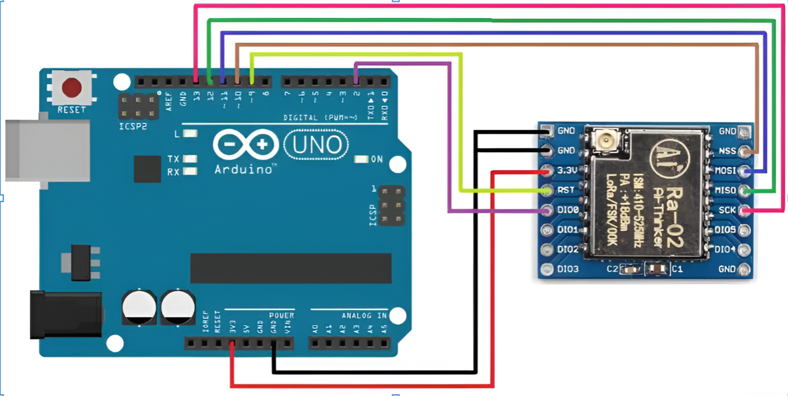

Wireless localization has become an essential requirement across a wide range of modern applications, from tracking livestock in remote farmlands to locating missing individuals during search-and-rescue missions. However, traditional tracking methods such as GPS are often unreliable in environments with weak satellite visibility, and they also consume significant power. In many real-world deployment scenarios—such as dense forests, indoor buildings, underground regions, and large agricultural spaces—a lightweight, low-power, long-range alternative becomes necessary. Our project was built precisely to address this need. It presents a complete wireless localization system that determines the real-time position of a mobile node by using three fixed reference nodes and the communication technology known as LoRa. Instead of relying on GPS satellites, our system estimates distance using the received signal strength of LoRa packets and then applies mathematical models to compute the coordinates of the mobile node.
The core idea of this project is to establish a self-contained tracking framework that does not depend on any external infrastructure such as cellular networks, Wi-Fi, or GNSS. By combining signal processing, wireless communication, and mathematical modelling, the system demonstrates how long-range IoT technologies can be used for real-world localization with meaningful accuracy. The project also tackles the challenging nature of RSSI-based distance estimation, which is traditionally unstable due to environmental noise, multipath reflections, antenna orientation differences, and hardware inconsistencies. These challenges allowed us to incorporate concepts like calibration, filtering, and error modeling into our system. Ultimately, the project serves as a complete demonstration of how mathematics and engineering can work together to solve a practical problem: locating a device in space using only wireless signals from LoRa modules.
About LoRa Technology
LoRa, short for Long Range, is a wireless modulation technique designed specifically for IoT applications where devices must communicate over long distances while consuming extremely low power. It uses a technology known as Chirp Spread Spectrum (CSS), which spreads the signal across a wide bandwidth using frequency sweeps. This makes LoRa very resistant to interference, capable of transmitting across several kilometers, and highly energy efficient. These features make it ideal for sensing and tracking applications, especially in outdoor environments such as farms, warehouses, and remote locations where traditional wireless systems fail.
In the context of this project, LoRa enables communication between one mobile node and three fixed anchor nodes. Each anchor node is built using an Arduino UNO and an SX1278 LoRa module operating at 433 MHz. The mobile unit receive packets transmitted by the anchor nodes and measure their RSSI values. The reliability and long-range nature of LoRa communication allow our system to operate without any dependency on Wi-Fi or cellular networks. The use of simple DIY wire antennas ensures cost-effectiveness, while the low-power characteristics of LoRa allow the mobile node to operate for long durations on battery power. By deploying the anchors at known positions and using LoRa’s stable communication abilities, we are able to collect signal strength data that forms the foundation of the localization calculations performed by the system.
Hardware Setup
The hardware architecture of our localization system consists of four main LoRa nodes: three fixed anchor nodes and one mobile node. Each anchor node is built using an Arduino UNO microcontroller paired with an SX1278 LoRa module operating at 433 MHz. The anchors are powered by a stable 3.3V supply and are equipped with wire antennas to facilitate long-range communication. These anchors are strategically placed at known coordinates within the deployment area to form a reference framework for localization. The mobile node, also based on an Arduino UNO and SX1278 module, is battery-powered for portability. It continuously scans for LoRa packets transmitted by the anchor nodes and measures the RSSI values of the received signals. The mobile node processes these RSSI readings to estimate distances to each anchor using a calibrated path loss model. All nodes are configured to operate on the same frequency and spreading factor to ensure reliable communication. The collected data is then sent to a central server via serial communication for further processing, including filtering and trilateration calculations. This hardware setup provides a cost-effective and efficient platform for implementing wireless localization using LoRa technology.

Sender and Receiver Codes
/* --- SENDER (ANCHOR) CODE --- */
#include <SPI.h>
#include <LoRa.h>
void setup() {
Serial.begin(9600);
LoRa.begin(433E6); // Frequency 433 MHz
LoRa.setTxPower(20); // Transmission power
LoRa.setSpreadingFactor(12); // SF7-SF12
}
void loop() {
LoRa.beginPacket();
LoRa.print("ANCHOR_1"); // Change to ANCHOR_2, ANCHOR_3 for other anchors
LoRa.endPacket();
delay(1000); // Broadcast every 1 second
}
/* --- RECEIVER (MOBILE NODE) CODE --- */
#include <SPI.h>
#include <LoRa.h>
unsigned long lastReceiveTimeA1 = 0;
unsigned long lastReceiveTimeA2 = 0;
unsigned long lastReceiveTimeA3 = 0;
int rssiA1 = 0, rssiA2 = 0, rssiA3 = 0;
int latA1 = 0, latA2 = 0, latA3 = 0;
bool gotA1 = false, gotA2 = false, gotA3 = false;
void setup() {
Serial.begin(9600);
LoRa.begin(433E6);
}
void loop() {
int packetSize = LoRa.parsePacket();
if (packetSize) {
String id = LoRa.readString();
int rssi = LoRa.packetRssi();
unsigned long now = millis();
if (id == "ANCHOR_1") {
rssiA1 = rssi;
latA1 = now - lastReceiveTimeA1;
lastReceiveTimeA1 = now;
gotA1 = true;
}
else if (id == "ANCHOR_2") {
rssiA2 = rssi;
latA2 = now - lastReceiveTimeA2;
lastReceiveTimeA2 = now;
gotA2 = true;
}
else if (id == "ANCHOR_3") {
rssiA3 = rssi;
latA3 = now - lastReceiveTimeA3;
lastReceiveTimeA3 = now;
gotA3 = true;
}
// When all 3 anchors received, output combined JSON line
if (gotA1 && gotA2 && gotA3) {
Serial.print("JSON_DATA:");
Serial.print(rssiA1); Serial.print(":");
Serial.print(latA1); Serial.print(":");
Serial.print(rssiA2); Serial.print(":");
Serial.print(latA2); Serial.print(":");
Serial.print(rssiA3); Serial.print(":");
Serial.println(latA3);
gotA1 = gotA2 = gotA3 = false;
}
}
}
RSSI & Path Loss Model
In wireless communication, the strength of a received signal decreases as the distance between the transmitter and the receiver increases. This decrease follows a predictable trend known as path loss. To estimate distance, our project uses a mathematical model called the log-distance path loss model, which expresses the relationship between RSSI (Received Signal Strength Indicator) and the physical distance separating two LoRa nodes. The model is written in the form:
RSSI = A – 10n log₁₀(d)
Here, A represents the RSSI value measured at a distance of 1 meter from the transmitter, n is the environmental path loss exponent that captures conditions such as obstacles, reflections, and air absorption, and d is the unknown distance we aim to calculate. To convert RSSI readings back to distance, we rearrange the equation mathematically. However, this process is highly sensitive to noise because RSSI values tend to fluctuate significantly even when the transmitter is stationary.
To use this model accurately, our system requires calibration. This involves taking real-world RSSI measurements at known distances and determining suitable values for the constants A and n. Once calibrated, the model provides approximate distance values that act as the input for trilateration. Even though the model is imperfect due to the unpredictable nature of radio waves, it forms the mathematical backbone of most RSSI-based localization systems. In our implementation, the raw RSSI values are first calibrated, then filtered through a noise-reduction algorithm, and finally converted into distances, which are used to compute the real-time position of the mobile node.
Kalman Filter
One of the biggest challenges of RSSI-based localization is the natural instability of RSSI values. Even in static conditions—when both nodes remain completely still—the RSSI can fluctuate by several decibels due to multipath reflections, antenna orientation differences, temperature changes, and random environmental noise. These fluctuations create large errors when converting RSSI into distance. To address this issue, our system uses a 1-dimensional Kalman Filter to stabilize and smooth the incoming RSSI readings. The Kalman Filter is a mathematical algorithm that continuously estimates the true value of a noisy signal by combining predictions with new measurements. It works in two stages: first it predicts the next expected value based on prior information, and then it corrects that prediction using the new RSSI measurement. Over time, this process produces a filtered RSSI value that is far more stable and reliable than the raw reading.
// Initialize: p = error covariance, x = estimate
const R = Process_Noise; // Noise in the system
const Q = Measurement_Noise; // Noise in RSSI readings
function update(rssi_measurement) {
// 1. Prediction Step
p = p + R;
// 2. Calculate Kalman Gain
k = p / (p + Q);
// 3. Update Estimate
x = x + k * (rssi_measurement - x);
// 4. Update Error Covariance
p = (1 - k) * p;
return x;
}
The strength of the Kalman Filter lies in its ability to intelligently balance trust between past data and current measurements. When the incoming RSSI readings are noisy or erratic, the filter naturally reduces their influence. When the measurements become stable, the filter adapts and follows them more closely. This dynamic adjustment significantly improves the accuracy of distance calculations, which in turn strengthens the reliability of the trilateration step. Without filtering, even small fluctuations in RSSI could result in large jumps in the estimated location. With the Kalman Filter, the system achieves smooth, consistent, real-time localization that feels natural and visually stable on the interface.
2D Trilateration
Once the distances to the three anchor nodes are computed, the next step is to determine the exact position of the mobile node in two-dimensional space. Trilateration is the mathematical process that makes this possible. Conceptually, each estimated distance represents the radius of a circle centered at the position of one anchor. The true location of the mobile node is the point where all three circles intersect. In real-world deployments, these circles rarely meet at a single perfect point due to noise and measurement errors. However, the equations of trilateration allow us to compute the best possible intersection point by solving a system of two simultaneous equations derived from the three circle formulas.
(x - xᵢ)² + (y - yᵢ)² = dᵢ²
In our implementation, the coordinates of the three anchors are known and fixed. The system uses the filtered distances (produced after Kalman processing) and substitutes them into the trilateration equations. These equations are solved mathematically to obtain an (x, y) coordinate that represents the estimated position of the mobile node. Because trilateration is sensitive to errors, even small improvements in distance accuracy lead to significantly better position estimates. By combining the RSSI path loss model, calibration, and Kalman filtering, our trilateration step produces a stable and visually accurate real-time position display on the website’s map interface. The result is a complete end-to-end LoRa-based localization system capable of tracking movement smoothly using only wireless signal strength and mathematical modelling.